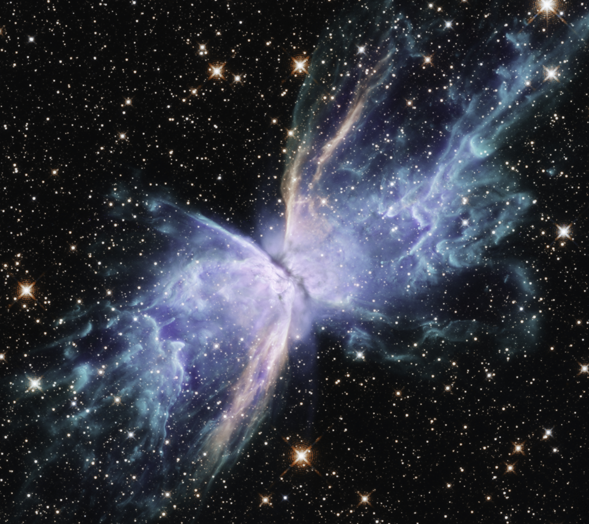
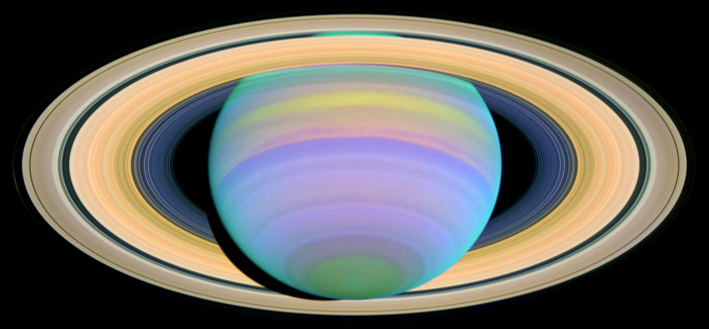

.png)
Nebulosa da borboleta (NGC 6302)
O Hubble foi recentemente redirecionado para a NGC 6302, conhecida como "Nebulosa da Borboleta", para observá-la em um espectro de luz mais completo, do ultravioleta próximo ao infravermelho próximo, ajudando os pesquisadores a entender melhor a mecânica em ação em suas "asas" de gás em tecnicolor. As observações destacam um novo padrão de emissão no infravermelho próximo de ferro ionizado individualmente, que traça um S do canto inferior esquerdo ao canto superior direito. Essa emissão de ferro provavelmente traça as ejeções de gás mais recentes do sistema estelar central, que se movem a velocidades muito maiores do que a massa expelida anteriormente. A estrela ou estrelas em seu centro são responsáveis pelo surgimento da nebulosa. Em seus estertores finais, elas se desprenderam periodicamente de camadas de gás ao longo dos últimos dois mil anos. As "asas" da NGC 6302 são regiões de gás aquecidas a mais de 36.000 graus Fahrenheit que rasgam o espaço a mais de 960.000 quilômetros por hora. NGC 6302 fica entre 2.500 e 3.800 anos-luz de distância, na constelação de Escorpião.
Saturno em untravioleta
Esta imagem ultravioleta de Saturno, obtida pelo Telescópio Espacial Hubble, foi obtida quando os anéis do planeta estavam a uma inclinação máxima de 27 graus em relação à Terra. Saturno sofre inclinações sazonais em relação ao Sol e em direção a ele, de forma muito semelhante à Terra. Isso ocorre ao longo de sua órbita de 29,5 anos. Isso significa que, aproximadamente a cada 30 anos, os observadores da Terra podem obter a melhor visão do polo sul de Saturno e do lado sul dos anéis do planeta. Ao examinar as neblinas e nuvens presentes nesta imagem, os pesquisadores podem aprender sobre a dinâmica da atmosfera de Saturno. Os cientistas obtêm insights sobre a estrutura e a composição gasosa das nuvens de Saturno. Por exemplo, aerossóis menores são visíveis apenas nesta imagem ultravioleta, porque não dispersam nem absorvem luz visível ou infravermelha, que têm comprimentos de onda mais longos.
Galaxia do sombreiro M104

A marca registrada da Galáxia do Sombrero, Messier 104 (M104), é um núcleo branco brilhante e bulboso cercado por grossas faixas de poeira que compõem a estrutura espiral da galáxia. Visto da Terra, a galáxia é inclinada quase de lado. Esta galáxia brilhante foi chamada de Sombrero devido à sua semelhança com o chapéu mexicano de borda larga e topo alto. O Hubble resolve facilmente o rico sistema de aglomerados globulares de M104, que aparecem como pequenas manchas no halo da galáxia acima e abaixo do plano galáctico. Estima-se que sejam quase 2.000 em número — 10 vezes mais do que aqueles que orbitam nossa Via Láctea. As idades dos aglomerados são semelhantes às dos aglomerados da Via Láctea, variando de 10 a 13 bilhões de anos. Inserido no núcleo brilhante de M104 está um disco menor, que é inclinado em relação ao disco maior. A emissão de raios X sugere que há material caindo no núcleo compacto, onde reside um buraco negro com massa de 1 bilhão de massas solares.